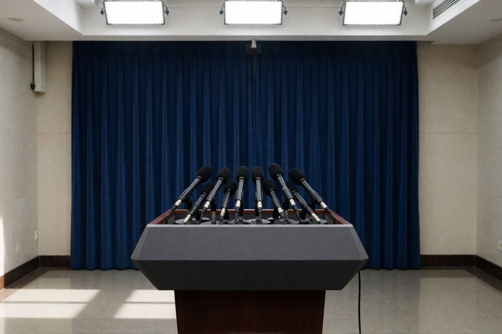

Geopolitica · 24 novembre 2026
Israele accusa l'Iran di costruire armi chimiche: «I piani sono pronti»

Il ministro della Difesa Israel Katz dice che Teheran sta sviluppando armi chimiche e che Israele non le lascerà arrivare. Sul calendario di un attacco, però, rimanda a Washington: la decisione, dice, spetta a Donald Trump.
di Franco Zanghì
Il ministro della Difesa israeliano Israel Katz accusa l'Iran di sviluppare armi chimiche e sostiene che Israele non permetterà a Teheran di arrivare a quella capacità. Lo ha detto martedì 24 novembre 2026, parlando a un gruppo di giornalisti israeliani.
«L'Iran è impegnato nello sviluppo di armi chimiche», è la sostanza delle sue parole, riportate dalle testate israeliane e poi dalle agenzie internazionali, «ma non ha ancora la capacità di colpire Israele con queste armi». Katz ha definito l'arma chimica un fattore capace di cambiare gli equilibri della regione.
Nelle sue dichiarazioni, però, non ci sono dettagli: nessuna sostanza, nessun sito, nessuna quantità. Il Jerusalem Post scrive che il ministro non ha precisato a che stadio sarebbe il programma, e l'Adnkronos che non ha indicato dove si svolgerebbe.
La frase che conta: decide Washington
Il passaggio più concreto riguarda l'eventuale azione militare. «I piani operativi sono pronti», ha detto Katz secondo il Times of Israel ripreso dalle agenzie. «Sarà il presidente degli Stati Uniti Donald Trump a decidere». L'esercito israeliano e il comando americano per il Medio Oriente, ha aggiunto, sono pronti ad agire insieme.
E sui tempi: «Quando arriveremo alla conclusione che dobbiamo agire, agiremo. La decisione non sarà dettata da considerazioni politiche». Katz ha anche negato divergenze con il primo ministro Benjamin Netanyahu e con il capo di stato maggiore Eyal Zamir, indicato da alcune indiscrezioni come contrario a un attacco immediato.
Secondo l'Adnkronos, Katz ha detto che colpire le infrastrutture energetiche iraniane «farebbe arretrare l'Iran di decenni», e che l'obiettivo strategico resta il rovesciamento del regime, pur ammettendo che nessuna azione militare, da sola, può farlo cadere. Il programma nucleare, ha precisato, è la priorità assoluta.
Le minacce iraniane e la risposta di Teheran
Katz ha richiamato minacce iraniane che l'intelligence americana ha già discusso in pubblico: progetti per assassinare Donald Trump e colpire altri alti funzionari degli Stati Uniti, e l'ipotesi di una bomba sporca, cioè un esplosivo caricato con sostanze chimiche o radioattive. La settimana prima la rete americana CNN, citando fonti dell'intelligence, aveva scritto di piani di questo tipo contro funzionari a Washington, descritti dalle stesse fonti come opzioni e non come il segnale di un attacco vicino. Il segretario di Stato americano ha parlato di minaccia non imminente.
Teheran nega. Il portavoce del ministero degli Esteri iraniano ha definito «false» le notizie sulle armi chimiche, accusando gli Stati Uniti di costruire un pretesto per prolungare il conflitto. Il ministro degli Esteri Abbas Araghchi, secondo le agenzie turche e arabe, ha parlato su X di propaganda in stile guerra in Iraq, con un riferimento al 2003, quando l'invasione americana fu motivata con armi di distruzione di massa che poi non furono trovate.
Israele senza governo
Tutto questo accade mentre Israele non ha ancora un governo. Dopo il voto di ottobre nessuno ha una maggioranza chiara, e l'incarico di formare l'esecutivo è a Gadi Eisenkot, ex capo di stato maggiore dell'esercito.
Eisenkot e Avigdor Liberman, presidente della commissione Esteri e Difesa della Knesset, hanno accusato Netanyahu di volere accelerare un attacco all'Iran per ragioni di politica interna. Eisenkot sostiene che il programma nucleare iraniano sia congelato o comunque lontano dal costituire una minaccia immediata, e che quindi non ci sia alcuna necessità militare di colpire prima che nasca il nuovo governo. Liberman, dopo un incontro informativo con il capo di stato maggiore, ha detto la stessa cosa.
Perché ci riguarda
Perché dallo stretto di Hormuz passa una parte enorme del petrolio e del gas del mondo, e quindi delle nostre bollette e dei nostri pieni. Israele e Iran si sono già scontrati due volte in due anni: una terza volta si sentirebbe subito anche qui.
Io la leggo così. Quando un ministro della Difesa parla di armi chimiche mentre il suo paese non ha ancora un governo, il messaggio è anche per la politica di casa e per Washington. E le accuse vanno provate: dopo l'Iraq, nessuno può più chiedere di crederci sulla parola.
Il passaggio da guardare è chi guiderà il prossimo governo israeliano, e se qualcuno mostrerà le prove.
Fonti
- Jerusalem Post, Yonah Jeremy Bob, «Israel Katz urges preemptive strike on Iran over chemical weapons threat», 24 novembre 2026
- Adnkronos, «Iran, news oggi: pronti piani d'attacco Israele e Usa, ultima decisione spetta a Trump», 24 novembre 2026
- Breitbart, «Israel Warns Iran Developing Chemical Weapons, Vows to Block Program», 24 novembre 2026
- Haaretz, «Katz Says Iran Is Developing Chemical Weapons and Plotting to Kill Trump», 24 novembre 2026
- Agence France-Presse, ripresa dalle testate internazionali, 24 e 25 novembre 2026
- Times of Israel e KAN, citate dalle fonti sopra per le dichiarazioni di Israel Katz
Nessuna delle fonti consultate riporta la trascrizione integrale dell'incontro con i giornalisti: le citazioni sono riprese in traduzione e possono differire di qualche parola. Katz, nelle parole citate, non ha usato l'espressione «attacco preventivo»: è il titolo del Jerusalem Post, mentre la frase «se gli iraniani ci attaccano per primi, sarà un fallimento» è attribuita da Breitbart a Channel 12. Le fonti non concordano sul luogo dell'incontro, l'ufficio del ministro a Tel Aviv secondo il Times of Israel, un briefing per i corrispondenti militari e diplomatici secondo KAN. Si contraddicono anche su chi chiese di rinviare un'operazione prima del voto israeliano: Katz dice che fu Israele a non volerla e che la discussione la avviò Trump, mentre Breitbart scrive che fu Netanyahu a chiedere il rinvio. La risposta attribuita al ministro degli Esteri Araghchi non compare nelle tre pagine lette per questo articolo, che riferiscono invece una smentita del portavoce del ministero: è riferita alle testate internazionali del 24 e 25 novembre. Non risultano commenti ufficiali dell'esercito israeliano a sostegno delle affermazioni sulla minaccia chimica.